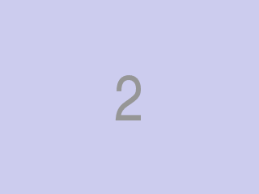

Найти среднюю по значению вершину из вершин дерева, у которых число потомков в левом поддереве не равно числу потомков в правом поддерева. Удалить её (правым удалением), если такая вершина существует. Выполнить прямой левый обход полученного дерева.
Входной файл содержит последовательность чисел — ключи вершин в порядке добавления в дерево.
Выходной файл должен содержать последовательность ключей вершин, полученную прямым левым обходом итогового дерева.
| in.txt | out.txt |
|---|---|
| 20 8 40 42 14 4 13 41 5 1 | 40 8 4 1 5 14 13 42 41 |

В случае неоднозначности выбора удаляемой вершины (например, несколько путей максимальной длины между вершинами с разным числом потомков и с минимальной суммой ключей конечных вершин имеют один и тот же корень, но средние по значению вершины этих путей не совпадают) ничего из дерева удалять не нужно.